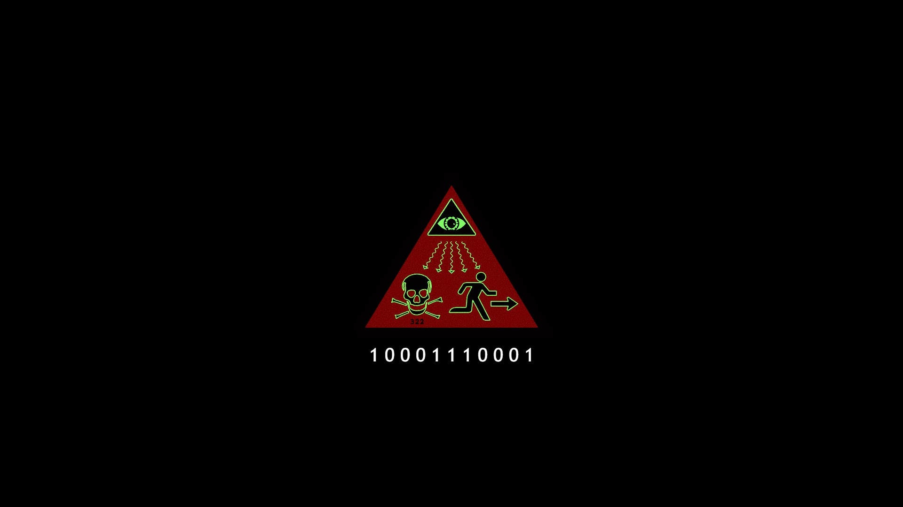

"Relax. Relax. Where am I? Where am I? What do you see? I don't know. I don't know. Am I dead? Not as you understand it. Do you fear death? No. Do you fear living? What are you? Nothing you can understand. What the f**k do you want? We are very curious about your kind and your experience of time. That's all this has been? It is a curiosity to us. So... So all... All this... We would like to understand. Linear time seems so impractical a state of being. To learn is a tediously slow process... and with each generation, it begins anew. A laborious cycle of empty promise. It banishes mankind to the torment of ignorance. Forever a child in the dark. How curious that nature could punish a creature so malevolently. You are condemned to relearn pain for an eternity. How painful it must be to possess self-awareness, and consciousness as you do... trapped in a lower dimension, such as you are. Jesus Christ, what the f**k do you want from me? Why did you choose me? "Choose"? Yeah. Why did you choose to decrypt the message? You asked me that before. You came to my house. We do not understand decision. We exist in one single moment. One blink of instantaneity. We understand everything there is to be understood in our world. Therefore, causality, probability and consequence are a mystery to us. It's something that doesn't exist in your time. If man's experience of time was like ours... would he remain? Would he remain? Would he remain? Would he remain? Oh, f**k. Relax. - [GRUNTS] - Relax. f**k! Oh, f**k. Relax. If the cracks of time were filled and man had no place left to hide... what then? I don't know. Oh, f**k. I don't know. I don't even know what the f**k you mean. What happens when man must wait no more? We become you? Is that something you'd like? I can't exist here. It's making me sick. You... You're killing me. But there is only one certainty for man: Death. [AIR WHOOSHES] Yet man hides from this inevitability. Man desires more time to distance himself from it. However, the more time man has... the more it takes from him. Prolonging your existence comes at the cost of unknown suffering. Time determines all for man. Ironic that it should be both the gift and the thief. What's it like? In your world? You cannot understand. If you can bridge the gap between dimensions to communicate with me, then you can... Then you can fucking try. You know things about us... and about our universe. Tell me. If you're seeking answers to alter your understanding of reality... does that not make your world a projection rather than a perception? What is the actuality? Do you see the world as you imagine it... or are you observing what is really there? If reality is just a projection, what happens when the source, when consciousness, is absent? Even with an eternity of self-reflection, man cannot understand the difference between actuality and illusion. With every man born comes a new reality... all competing in perpetuity. Perhaps this is why man is so perpetually at odds. - So conflicted. - Stop. Stop. Stop. - So divided. Stop. Am I the only one you're doing this to? Would you feel better if you weren't? You don't want to be alone. I don't wanna suffer. - You're in pain? - Yes. Yes, I'm in pain, and now I just have to sit here until I fucking die. What if you could return to a moment in what you understand as the past? Before you were sick? If I were to travel back in time? Yes. With the information you now possess. How do you think it would alter your behavior? What would you decide to do differently, if anything at all? I would tell A.R.I.S.T. to go f**k themselves. You would choose differently? I would stop this. I would stop you. - Remove us from the equation. - I can't. unable to see us. Doesn't matter. I would know that you're there. I would know that you were watching. The idea alone would change your perception of reality, and therefore change your behavior. Yes. differently if there was nothing you could do to alter the situation? - I just would. - We find this curious. We don't choose. We don't decide what happens. I didn't choose to be here. I didn't choose to get sick. Things happen that we have no control of. We don't just... We don't just look at the world... and paint it however we want. If you really believe that, then you believe you are not in control, and you exist at the mercy of all else. You believe your thoughts are of no consequence. If you returned to a time with knowledge you now possess, that you did not before... what would it matter? What would our existence matter? What would our observations matter? If time was reset... and you were put back... what difference would it make?"
Alien Code